North Peak B1 Massif
A first authored replacement for the North Peak macro-terrain, not another correction of the R1 mountain. The design is a derived design master that the terrain is generated from. The result is compared with canonical R1 (M0) in real Three.js captures from identical cameras under both clay presets, before (B1.0) and after (B1.1) the one permitted correction.
B1.1 is the first North Peak candidate that reads as a mountain massif rather than a modified smooth hill. In the real Three.js renders, under both clay presets, the smooth R1 dome is replaced by an asymmetric crown: a dominant horn summit (897 m), the Skar notch, a lower Tarntind and a Vesttind shoulder. From the north, two dark lee-cirque bowls under clean arêtes read as genuinely glacial, and the south-east and south-west obliques show three different arms meeting at one summit. B1.1 is clearly better than both M0 and B1.0.
The acceptance is conditional, not production approval. Four geographic acceptance conditions fail and stay failed. (1) Four boundary-seam clusters exceed the declared 0.25 ha limit (largest 2.08 ha), where authored arms meet the frozen coast band 50–66 m too high, or a carved trough meets it up to 190 m too low. (2) The authored Western Col is filled: the real col is 695 m, 100 m west of the authored point, and Vesttind keeps 40 m of prominence instead of 56 m. (3) About a quarter of the new route section crosses side-slopes above 0.5, so the tread is a traverse across steep ground. (4) The last 246 m of path is a declared scramble up to 0.48.
Artistic reservations remain as well. From the two identity views the crown sits on a long smooth plinth that is outside the study area. Several broad faces are smooth or planar, like clay rather than rock. From player height on the route, the summit reads as a smooth rounded knob with one dark face, not yet as a compelling alpine climb.
1 · B0 design target
The authored intent: summit hierarchy, three different arms, saddles, cirques, buttresses, preserved areas and the route change. It is drawn over the R1 hillshade. These are design targets, not evidence that terrain exists.
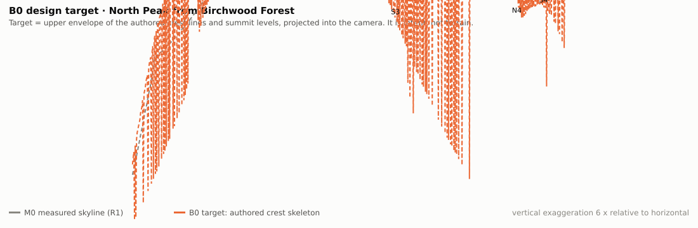
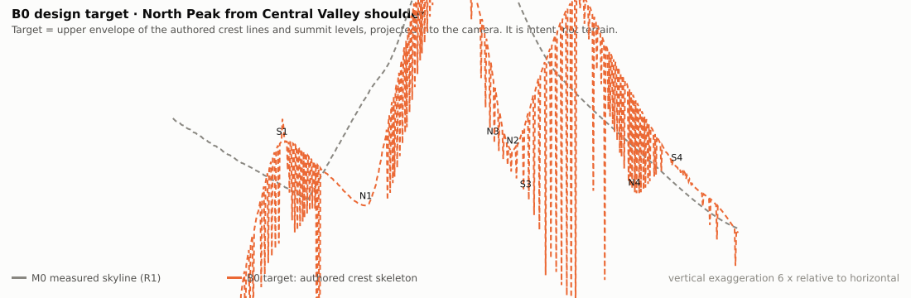
2 · Compare real renders
Real Three.js captures with identical camera positions for every variant. Walk cameras stand 1.75 m above the loaded terrain; aerial cameras are fixed in the world. Clay material only: no vegetation or texture hides the landform.
Matched sheets (M0 | B1.0 | B1.1)
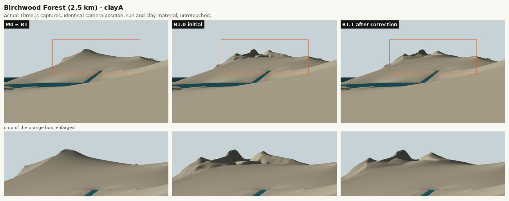
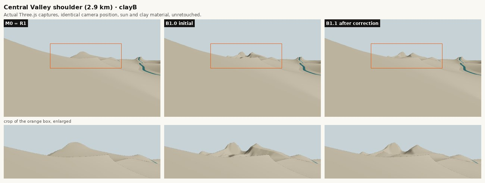
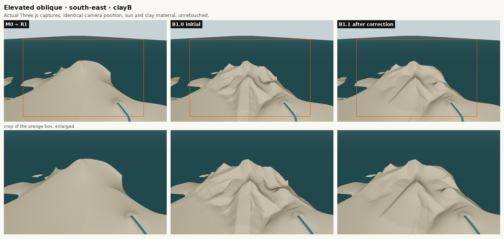
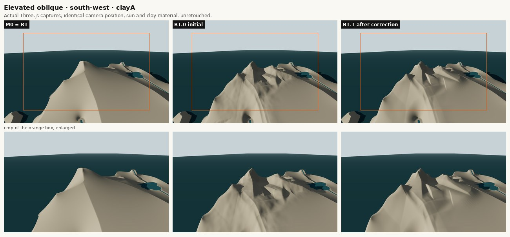
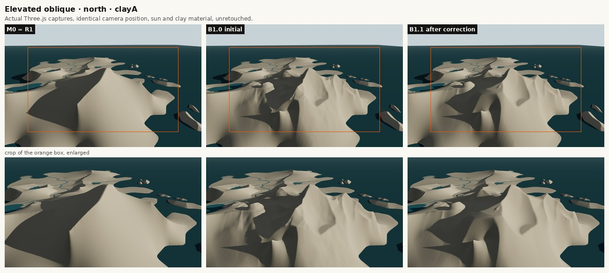
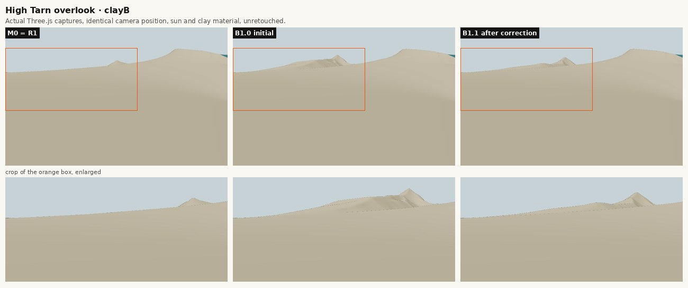
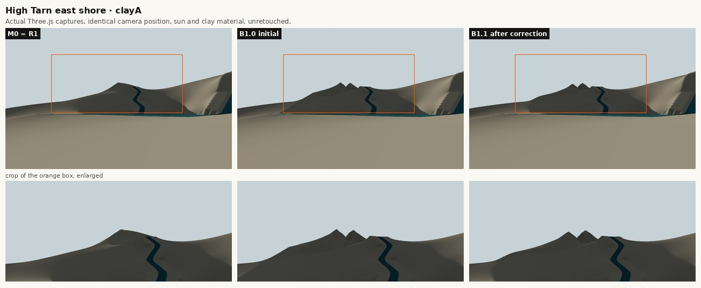
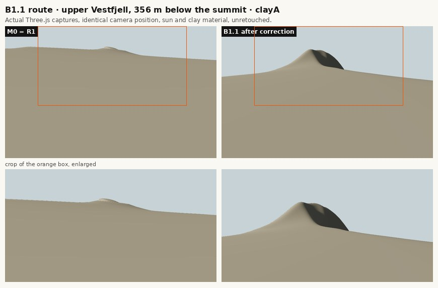
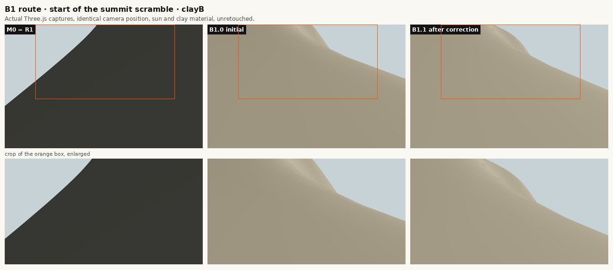
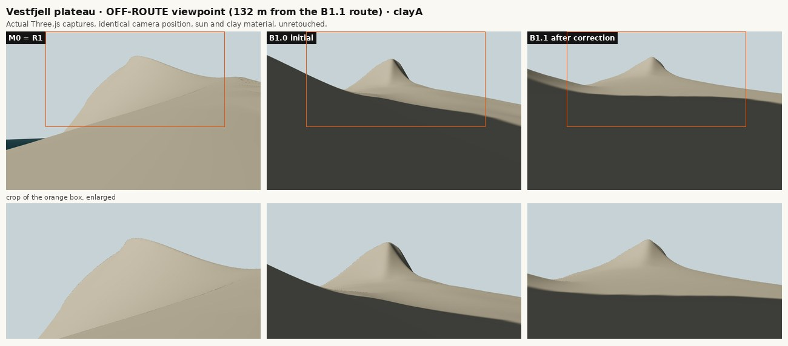
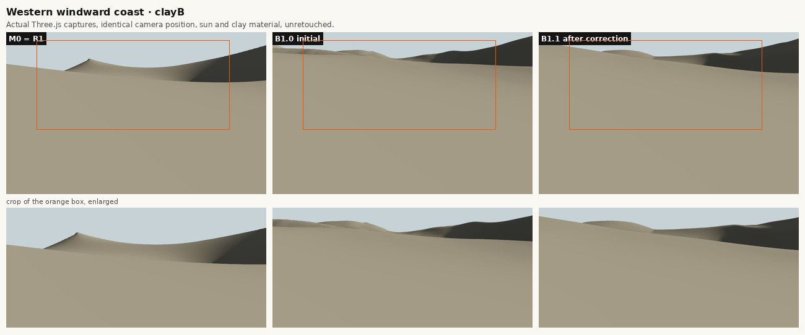
3 · Artistic evaluation
Judged on the real captures under both sun presets, not on displacement or pixel counts.
| North Peak silhouette from Birchwood and Central Valley | Clearly improved and recognisable: a toothed crown with a dominant horn and a deep notch replaces the dome. North Peak is the highest and most distinct top in both views. The crown occupies only the upper part of the view, above a smooth plinth. |
|---|---|
| Main summit versus secondary summits | Good after the correction: North Peak 897 m, Tarntind 775, Nordhorn 754, Vesttind 736, Austtind 700. Their shapes differ (horn, broad top, gendarme, shoulder). Vesttind is weak because its col is filled. |
| Structural coherence of the three arms | Coherent: all arms and buttresses connect to the summit. The west arm is broad and windward, the north arm a narrow lee arête and the south-east arm stepped. Weakest link: the Western Col. |
| Glacial cirques, headwalls and shoulders | Convincing from the north (two cirque bowls with headwalls). Soft from the south: the hanging south cirque reads as a shallow hollow, and the troughs have no stepped floors or lips. |
| Transitions to the surrounding landscape | Mostly smooth, but four seams fail the declared limit, mainly at the coast. Visible as cut ledges or artificial sea cliffs in the elevated obliques. |
| Smooth or faceted surfaces | B1.0's crumpled faceting is resolved. Broad faces are now often too smooth, and some flanks show planar triangles in raking light (south-west oblique). There is no meso-scale rock structure yet. |
| Both lighting conditions | Consistent: the massif reads under clay A (low WNW) and clay B (SE). Clay A shows the north cirques and planar facets most strongly. |
| Hiking experience | More compelling than R1 on paper: a plateau approach, a shoulder and a summit scramble with views into the lee cirques. At player height the views are smooth slopes, and a quarter of the new section is steep side-slope. Controller traversal works, but it does not prove a comfortable or convincing hike. |
4 · Terrain geometry
B1.1 changes 327.19 ha: 190.76 ha raised and 84.27 ha lowered by more than 1 m, between +155.49 m and −195.31 m. All changes are inside the study area.
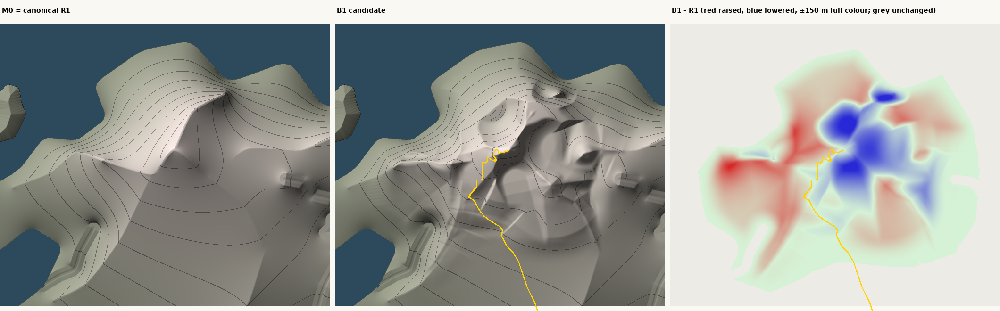
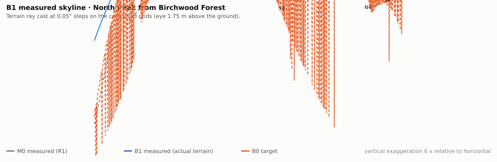
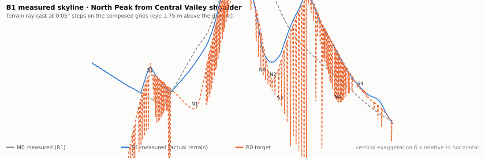
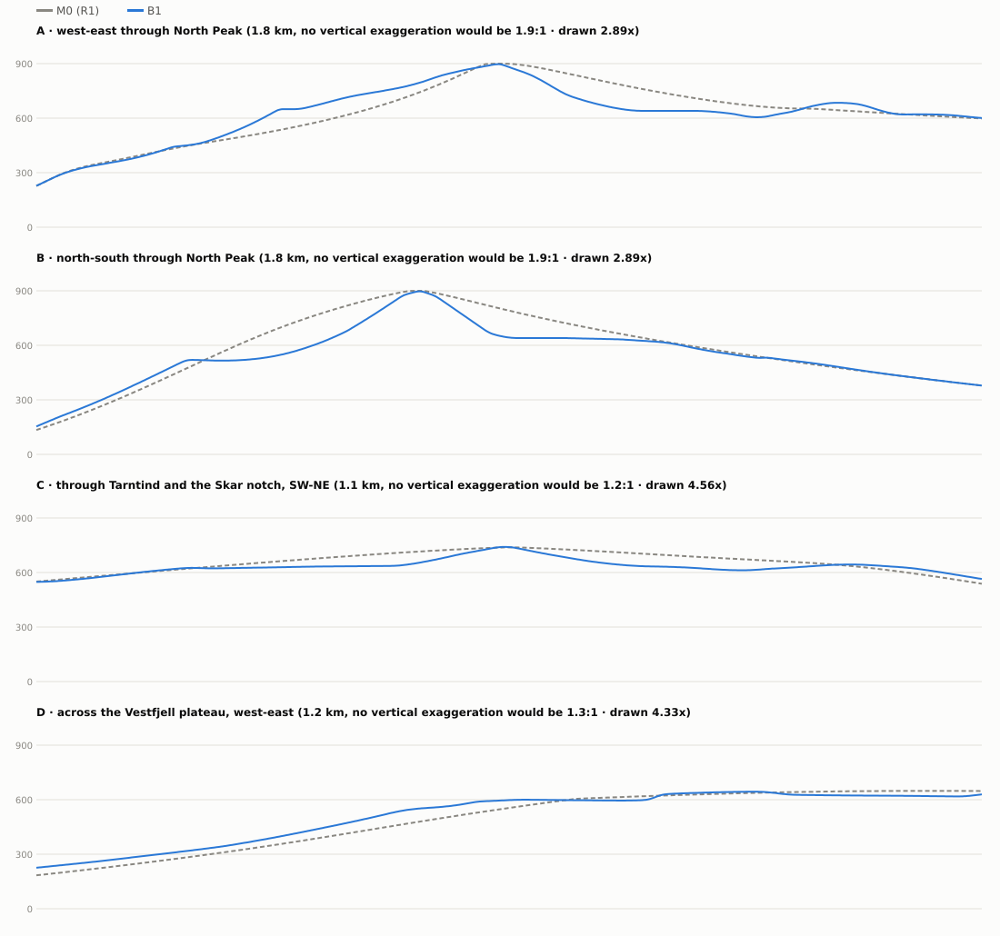
| Summit / saddle | Authored, m | B1.1, m | R1, m |
|---|---|---|---|
| S0 North Peak | 900 | 897.0 | 900.0 |
| S2 Tarntind | 768 | 774.7 | 693.3 |
| S1 Vesttind | 724 | 735.8 | 636.0 |
| S3 Nordhorn | 738 | 754.0 | 797.9 |
| S4 Austtind | 700 | 700.2 | 644.3 |
| N1 Western Col | 668 | 728.8 | 688.5 |
| N2 Skar notch | 690 | 711.9 | 809.8 |
| N3 North gap | 760 | 759.5 | 861.2 |
| N4 Tarn col | 655 | 625.4 | 667.9 |
5 · Hydrology and walking route
Drainage is recomputed, not frozen. B1 adds no dry closed depression. 17.55 ha change their drainage destination. High Tarn's catchment goes from 102.3 to 95.3 ha, and its lake, level, shore and inlet channels are untouched.
| Destination change | Area |
|---|---|
| High Tarn → sea | 0.53 ha |
| High Tarn → other (main river system) | 7.42 ha |
| sea → High Tarn | 0.88 ha |
| sea → other (main river system) | 8.6 ha |
| other (main river system) → sea | 0.12 ha |
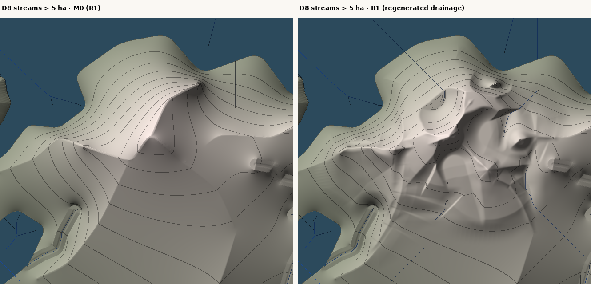
Route: the R1 peak-ascent is blocked on B1 (point 2000) and is kept as reference (peak-ascent-r1 in the viewer). The candidate follows R1 for its first 1074 points, then climbs 2795.3 m in total to the summit. Hiking grade (10 m): p95 0.294, max 0.428. Declared summit scramble (last 140 m): max 0.475. The walk test passes end to end.
6 · Validation and reproducibility
Final check matrix. Failed geographic conditions stay failed even though every automated test passes; no threshold was changed.
| Final check | Status |
|---|---|
| Two independent deterministic B1.1 generations | pass |
| Canonical R1 terrain preserved (fc8fd6da…) | pass |
| A-R1 design master unchanged (62cb154b…) | pass |
| B1.0 and B1.1 artifact hashes recorded and reproduced | pass |
| Protected files unchanged against f1d58eb (R1, A1a, A1b, A1c, P0, canonical tools, existing tests) | pass |
| No change outside the study area, at the coast band, in water, at High Tarn + 150 m, in protected corridors or on other routes | pass |
| Viewer selects the B1.1 variant and reports the active and baseline hashes | pass |
| Existing tests (unmodified) and candidate tests | pass |
| Production build | pass |
| No new dry closed depressions | pass |
| Lake and river levels unchanged | pass |
| Candidate route continuous in the real browser (walkRouteForTest) | pass |
| Terrain / player collision consistency along the route | pass |
| Boundary seams within the declared 0.25 ha limit | FAIL (4 clusters, largest 2.08 ha) |
| Authored Western Col level (668 m) | FAIL (695 m real col, 729 m at the authored point) |
| Candidate route hiking grade ≤ 0.30 outside the declared scramble | FAIL (38 m above 0.30, max 0.43) |
| Comfortable tread (cross-slope ≤ 0.5) | FAIL (25.7 % of the new section above 0.5) |
| Android or desktop performance on devices | UNVERIFIED (not measured in this milestone) |
| Art approval | NOT GIVEN: ART CONDITIONAL — GEOGRAPHIC CORRECTION REQUIRED |
| Check (first validation run) | Result |
|---|---|
| M0 (empty variant) = canonical R1, byte for byte | pass |
| Nothing changes outside the study area | pass |
| Coastline (land/sea) and the 0–70 m coast band unchanged | pass |
| Every water cell unchanged (lakes, channels, surface) | pass |
| High Tarn, its 360 m level, shoreline and 150 m around it unchanged | pass |
| tarn-inlet-w and windward-gully corridors (40 m) unchanged | pass |
| All other route centrelines unchanged (Δ = 0 m) and walkable on B1 | pass |
| North Peak is the island maximum at 897.04 m, 2.0 m from the approved position | pass |
| No new dry closed depressions (whole island, priority flood) | pass |
| No new unresolved drainage (1921 cells, all on R1 too) | pass |
| Candidate peak-ascent walks end to end (viewer walk rule emulated: 0.65 m steps, grade ≤ 0.7) | pass |
| Candidate hiking grade (10 m): p95 0.294, 1.5 % above 0.30; summit scramble max 0.475 | pass |
| Boundary seam: largest cluster where B1 adds steepness over R1 in the blend band 2.08 ha (limit 0.25 ha) | fail |
| Deterministic generation (2 runs, identical SHA-256) | pass |
| npm test: 58/58 pass (50 existing, unmodified, + 8 B01 tests) | pass |
| npm run build (tsc --noEmit + vite build): pass | pass |
Full reports: validation/b1.json, data/skylines.json, run-log.json, routes in public/geo-r02c-b01/routes.json. Expected differences, not regressions: peak-ascent R1 alignment: blocked on B1 (superseded by the candidate alignment peak-ascent-b1); R1 North Peak crest lines and crest levels in features.json / the A-R1 master: superseded inside the study area by the derived master tools/geo-r02c-b01/design/north-massif-b1.json; catchment rings in features.json describe R1 drainage; B1 drainage is recomputed here.
7 · Final validation detail
The recomposition in memory equals the committed terrain: True. Genuine in-browser traversal (the viewer's own walkRouteForTest on ?terrain=b01-b1):
| Route on B1.1 | Blocked at | End distance |
|---|---|---|
| hero | none | 0.0 m |
| tarn-ascent | none | 0.0 m |
| peak-ascent | none | 0.0 m |
| peak-ascent-r1 | 2000 | 372.6 m |
| hidden-loop | none | 0.0 m |
| west-cape-spur | none | 0.0 m |
| south-shoulder-loop | none | 0.0 m |
Collision consistency along the candidate route: rendered vs canonical surface 0 m; eye height after the walks 1.75 m. On M0 every R1 route walks end to end.
| Route geometry, new section | Value |
|---|---|
| Hiking grade (10 m) over 0.30 outside the scramble | 38 m, in 5 sections |
| Declared summit scramble (within 140 m of the summit) | 246 m of path, median 0.364, max 0.475 |
| Cross-slope ±2 m: share above 0.5 / above 1.0 | 25.7 % / 4.2 % |
| Usable tread (cross-slope ≤ 0.5 both sides): median, share under 2 m | 12.0 m, 24.9 % |
Controller traversal proves only that the 0.7 step rule is never exceeded; cross-slope above 0.5 means the tread is a traverse on a steep slope and would need a built bench to be comfortable.
| Boundary seam cluster | Area | Mean / max above R1 | Slope B1 / R1 | Nearest structure |
|---|---|---|---|---|
| -1460, 2687 | 2.08 ha | 65.7 / 141.6 m | 2.59 / 1.26 | arm-west |
| -997, 2953 | 1.71 ha | 52.5 / 128.9 m | 2.52 / 1.57 | b-vesttind-north |
| -1117, 2093 | 0.88 ha | 30.8 / 61.9 m | 2.32 / 1.48 | fjell-southwest |
| -73, 3180 | 0.79 ha | -33.5 / 59.7 m | 2.93 / 1.63 | arm-north |
Two mechanisms. (1) Too high: the west arm (nw-cape end) and the Vesttind north buttress are still 50-66 m above R1 (locally up to 140 m) where the blend weight falls to 0 at the frozen coast band (coastFreezeM 70 m, coastFeatherM 160 m), so the difference is absorbed in a ~160 m strip and the slope doubles (about 2.5 against R1 1.3-1.6). (2) Too low: at the north-arm headland the carved north cirque and its trough end up to 190 m below R1 just inside the coast feather, so B1 steps up into the frozen R1 cliff. A smaller cluster lies beside the protected windward-gully corridor, where the fjell flank meets the corridor fade.
Western Col: authored 668 m. B1.1 is 728.8 m at the authored point, and the real low point is 695.3 m at [-873, 2673]. Vesttind's prominence is 40.5 m (authored 56 m). At the authored col point the highest authored part is not the west arm (666 m, as designed) but the south-east arm (726 m): that arm starts at the summit, and its radial end cap behind the summit (end taper 160 m, then a 0.9 fall) still stands 726 m high 250 m west of S0. The smooth-max union keeps it, so the col point is filled to about 729 m. The real low point of the S0-S1 crest moves 100 m west to the arm-west/plateau junction, where the Vestfjell plateau shoulder holds it at 695 m. Vesttind keeps 40 m of prominence instead of the authored 56 m.
| Drainage-destination change zone | Area | From → to |
|---|---|---|
| 176, 2579 | 13.34 ha | High Tarn → other (main river system) |
| -26, 2274 | 4.13 ha | sea → other (main river system) |
unchanged: the water-surface raster is shared with R1 and no terrain under any water cell changed, so every lake level (High Tarn 360 m) and channel bed/water level is as in R1. Acceptable authored change: drainage reassignment inside the study area following the new cirques and troughs (the north-coast and central-trough catchments gain, High Tarn loses about 7 ha of its west slope). Defects: none found for sinks or unresolved flow; one dry tarn-site hollow is a representation gap (no water-surface variant), not a drainage failure.
8 · B1.0 → B1.1: the one correction
Every change to the design master between the initial candidate and the corrected one (data/design-changes-b1.0-to-b1.1.json). Original and revised plans below; both are design material, not terrain.
| Design master field | B1.0 | B1.1 |
|---|---|---|
buttresses[b-tarntind-south].knots | [[-170, 2470, 795], [-150, 2330, 655], [-122, 2180, 548], [-100, 2050, 478]] | [[-170, 2470, 768], [-150, 2330, 655], [-122, 2180, 548], [-100, 2050, 478]] |
buttresses[b-peak-southwest].flank.decayM | 140 | 100 |
buttresses[b-peak-southwest].flank.g0 | 0.8 | 0.85 |
buttresses[b-peak-southwest].flank.g1 | 0.28 | 0.34 |
revision | B1.0 | B1.1 |
ridges[arm-west].knots | [[-520, 2770, 892], [-600, 2738, 866], [-690, 2706, 758], [-770, 2690, 668], [-880, 2672, | [[-520, 2770, 892], [-600, 2738, 866], [-690, 2706, 758], [-770, 2690, 668], [-880, 2672, |
ridges[arm-southeast].knots | [[-520, 2770, 892], [-442, 2702, 812], [-345, 2635, 712], [-262, 2560, 762], [-170, 2470, | [[-520, 2770, 892], [-442, 2702, 812], [-345, 2635, 690], [-262, 2560, 735], [-170, 2470, |
ridges[rim-east].knots | [[-170, 2470, 795], [-80, 2560, 700], [-10, 2620, 655], [60, 2690, 684], [120, 2745, 700], | [[-170, 2470, 768], [-80, 2560, 700], [-10, 2620, 655], [60, 2690, 684], [120, 2745, 700], |
ridges[fjell-southwest].knots | [[-880, 2650, 700], [-878, 2520, 640], [-890, 2380, 600], [-910, 2250, 566], [-955, 2110, | [[-900, 2615, 648], [-878, 2520, 640], [-890, 2380, 600], [-910, 2250, 566], [-955, 2110, |
saddles[N2].levelM | 712 | 690 |
structure.flankRibAmplitudeM | 6 | 3.5 |
structure.flankRibWavelengthM | 170 | 280 |
structure.flankVariation | None | 0.35 |
structure.flankVariationWavelengthM | None | 230 |
structure.smoothingSigmaCells | 0.8 | 1.2 |
studyArea.protected[windward-gully].featherM | 90 | 150 |
summits[S2].levelM | 795 | 768 |
summits[S1].levelM | 742 | 724 |
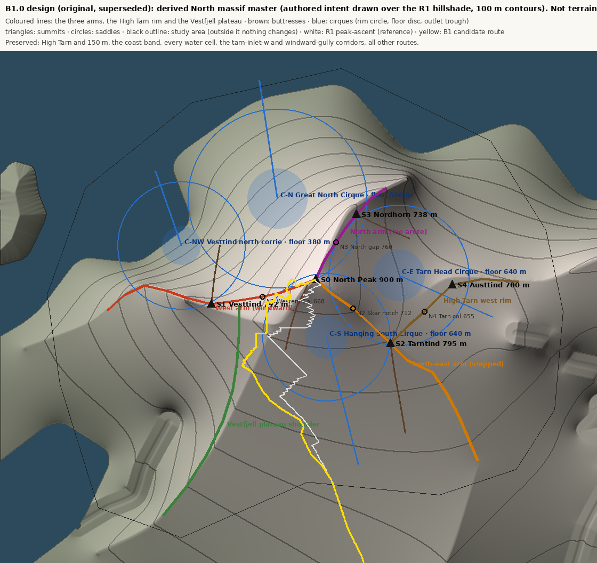
9 · Known-defect register
| ID | Severity | Defect | Recommended B2 correction |
|---|---|---|---|
| D1 | geographic failure | Coastal boundary seams | Make the coast an authored boundary condition, not a freeze: give every arm a declared terminal profile that reaches R1 coast heights at the coast band (for example an end-cap level ramp tied to the R1 value at distance 70 m), let cirque troughs exit through authored coastal notches or hang above the R1 cliff with a declared lip, and widen protected-corridor fades to the local relief. Re-run the same seam criterion unchanged. |
| D2 | design deviation | Western Col filled, Vesttind prominence 40 m instead of 56 m | End the south-east arm at the summit (no end cap behind it) or clip its end cap to the summit block, and start the Vestfjell plateau shoulder 150–200 m from the col; check that the col falls to 660–670 m and Vesttind regains about 55 m of prominence. |
| D3 | walking-quality risk | Steep side-slopes and summit scramble on the candidate route | Author a trail bench (a narrow terrace cut and fill) along the traverses, or reroute the upper section along the south-west shoulder crest. Decide explicitly whether the summit scramble is an intended hiking feature. |
| D4 | representation gap | Dry tarn-site hollow | either author it as a tarn with a water-surface variant, or open its outlet in the design |
| D5 | artistic | Smooth plinth outside the study area in the identity views | separately authorised extension of the study area south to about z 1300 |
| D6 | artistic | Smooth or planar faces, no meso-scale rock structure | rock bands and headwall steps, stepped trough floors and lips, talus aprons, driven by slope and the authored structures |
| D7 | evidence note | Vestfjell camera is an off-route viewpoint | an on-route camera, b01-route-b11, was added and captured for M0 and B1.1 |
10 · Provenance and checksums
Branch feature/geo-r02c-b01-north-massif-rebaseline, base f1d58eb1a9508f5a7c287f06d7617a327cfabf13. Real Three.js captures are under captures/ (manifests carry each frame's terrain SHA-256). Design material is images/design-plan*.png and images/target-*.svg. Measured terrain figures are maps-b1.png, sections-b1.svg, skyline-b1-*.svg and streams-b1.png.
| Artifact | SHA-256 |
|---|---|
public/geo-r02b/terrain.f32 | fc8fd6da0472bc3eda7dd9d1f2f8f9bfd15b2bb55998db1333cbd6256b1f946a |
public/geo-r02b/water-surface.f32 | e233e4f8cc2d7f425576c70f112819d49198a6090f15054e9e78523954e5bc55 |
public/geo-r02b/features.json | 8f538cef4ce368c958abb0d5097895b4bd230ff2d5f97fd0f32ed8b37ed0166e |
docs/geo-r02b/design-master-A-R1-v1.json | 62cb154b4ab6473ae7e2507449cea5407774503cdc09fe42f09adbde0a0ec598 |
tools/geo-r02c-b01/design/north-massif-b1.json | b2a36745c527ff36577bd2fee5946d4490b805b39fcd34f7a46d888271126db4 |
docs/geo-r02c-b01/iteration/north-massif-b1.0.json | 738cc1c662c7423778d5e02fe6d6c0a3bc4f1a208135ae6ce458fd5c29347057 |
public/geo-r02c-b01/b1.patch.f32 | 1d866f1ad614a4891b7b3740de33e9d767d7ea3328d1079277b79a4609f3da57 |
public/geo-r02c-b01/manifest.json | 411f45754d81b96a5ef9c0569f688249deb6fd10965899b09183202b79545dcb |
public/geo-r02c-b01/routes.json | d0a545f84772bb68528f10c52c968d4d3dd9db42bc25bd4cca8ef5bb83559943 |
The full list of 148 files is in data/checksums.json.
11 · Local design-authority changes
- New derived design master tools/geo-r02c-b01/design/north-massif-b1.json (B1.1; B1.0 kept in docs/geo-r02c-b01/iteration/). It supersedes, inside the study area only, the A-R1 ridges n-main (west of x 260), n-crown, n-west-spur (north of z 1900), n-nw-cape (east of x −1330) and n-east-arc (west of x 430). The A-R1 master file is unchanged (62cb154b…).
- Summit hierarchy re-authored: North Peak ≈ 900 m at its approved position; Tarntind, Vesttind, Nordhorn and Austtind; saddles N1–N4.
- Crest sections lowered below R1 (Skar notch −98 m, North gap −102 m); secondary summits raised above R1 (Tarntind +81 m, Vesttind +100 m).
- Four cirques with outlet troughs carved (down to −195 m); the lowland envelope lowered in the massif core, tapering to zero at the coast and at the south and east edges.
- Drainage regenerated inside the study area: 17.6 ha change destination; High Tarn catchment 102.3 → 95.3 ha. Lake, level, shore and inlet channels are untouched.
- Peak-ascent candidate realignment from where the route enters the edited terrain; the R1 alignment is kept as reference (peak-ascent-r1). Includes a declared summit scramble above the 0.30 grade target.
Limitations
- Clay renders only; no vegetation, rock material, snow or atmosphere.
- The study area excludes the southern plinth seen from Birchwood and the Central Valley.
- Heightfield on a 4 m grid: no overhangs, and arêtes about 8 m wide after smoothing.
- No water-surface variant: the one tarn-site hollow is rendered dry.
- The route checks are geometric (grade, cross-slope, tread) plus the controller's step rule; they do not establish comfort or the feel of the climb.
- B1.0 frames exist for the 12 original cameras; the on-route camera b01-route-b11 was added afterwards and has M0 and B1.1 frames only.
Suitability for B2 and recommendation
Yes. Protect the summit block, the three-arm layout, the Skar notch, the north and east cirques and the summit hierarchy. B2 should correct the boundary, the col, the route tread and the meso-scale surface, not redesign the massif.
GEO-R02C-B2 — Massif Integration & Geographic Refinement, scoped to the defect register only.
1. Coast as an authored boundary condition (D1): terminal profiles for every arm reaching R1 coast heights, cirque troughs ending in authored coastal notches or hanging lips, wider corridor fades. Same 0.25 ha seam limit.
2. Western Col and Vesttind (D2): remove the south-east arm's end cap behind the summit and move the plateau shoulder away from the col. Target col 660–670 m and Vesttind prominence of about 55 m.
3. Drainage (D4): decide tarn or outlet for the one hollow; if tarns are kept, add a water-surface variant and re-validate lake levels.
4. Route (D3): a trail bench along the steep traverses, or a crest alignment on the south-west shoulder. Make the summit scramble an explicit design decision.
5. Integration (D5, D6): with separate authorisation, extend the study area over the southern plinth, then add one meso-scale rock layer. Keep the B1.1 summit silhouette locked by a skyline regression test from Birchwood and the Central Valley shoulder.